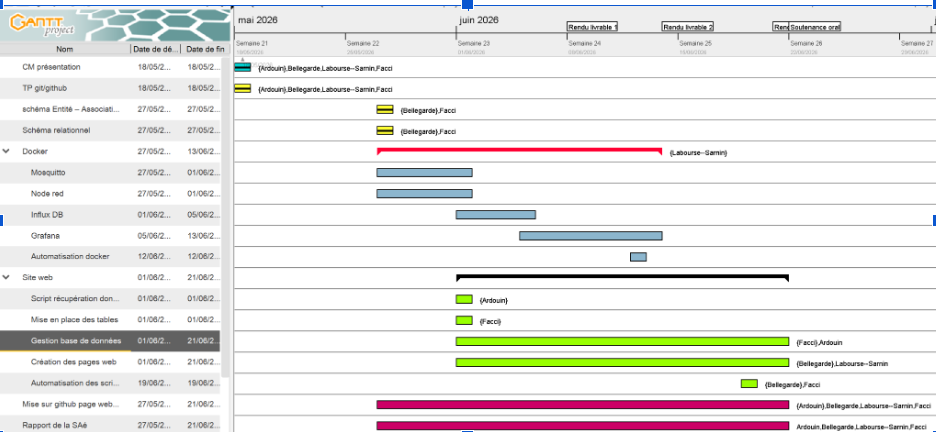
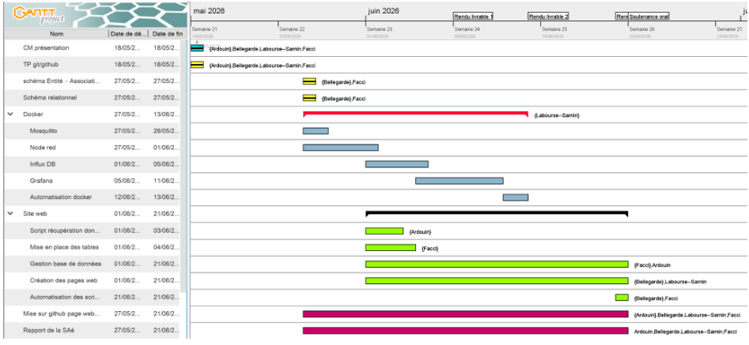
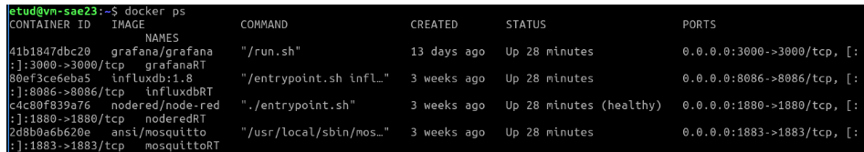
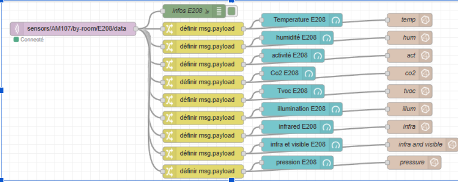
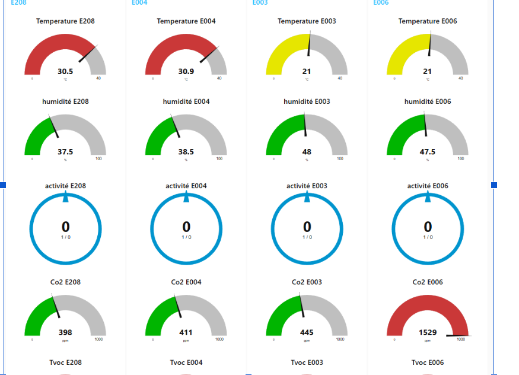
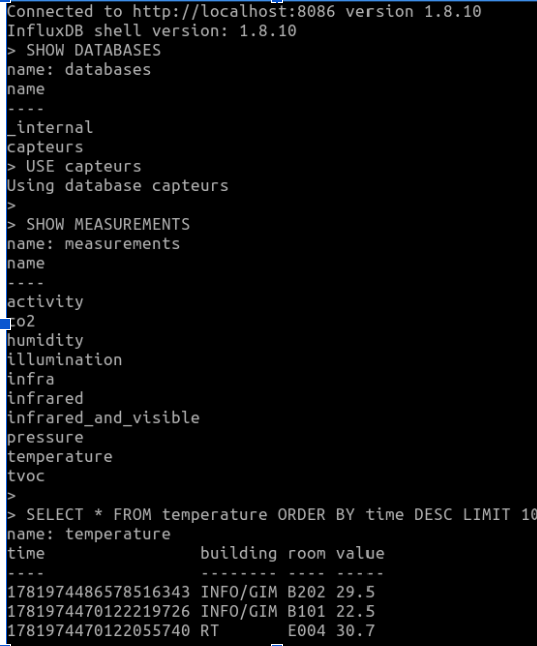
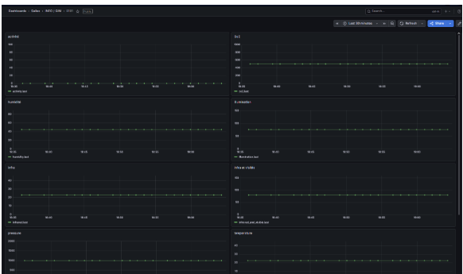
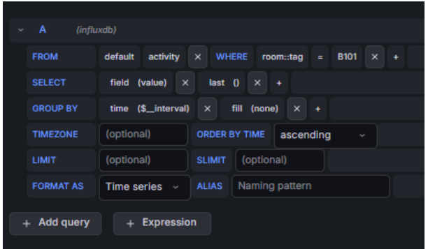
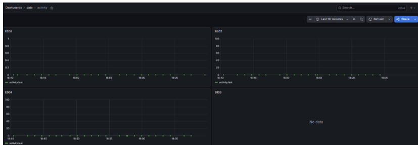
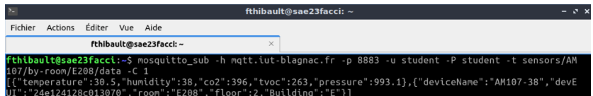
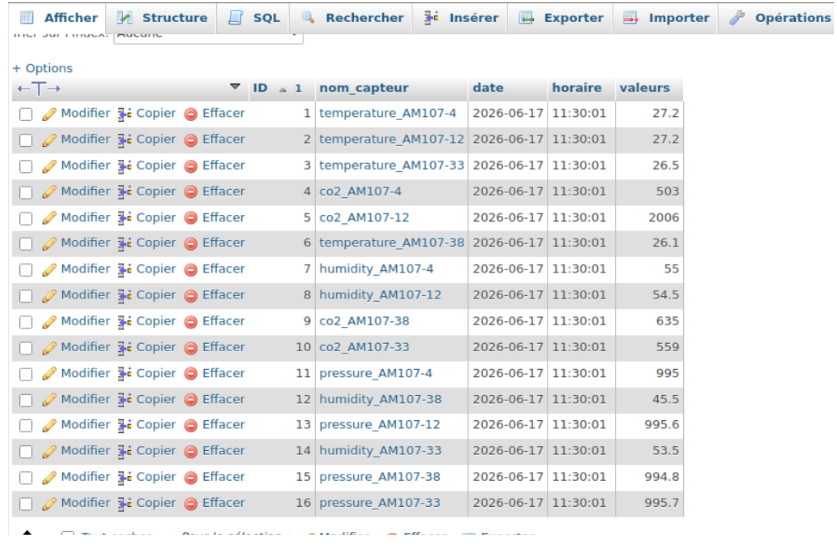
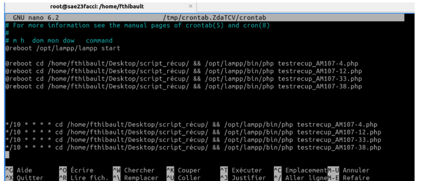
Tout d'abord, la première tâche que j'ai réalisé, a été le croquis du modèle Entités - Associations.
En effet, lors de la première séance de TP encadré, j'ai été aidé de Alexi, afin de réfléchir à ce
modèle, avant de faire un schéma du modèle relationnel et la base de donnée. Nous avons du faire
valider le modèle Entités - Associations et le schéma du modèle relationnel, par Mr Brulin
(professeur encadrant la séance) avant de se lancer dans
la conception de la base de données
sur phpMyAdmin.
Ensuite, j'ai pu m'attaquer à la base de données lors des séances qui ont suivi.
Pour ce faire, j'ai créer les tables en graphique sur phpMyAdmin qui est un gestionnaire de bases de
données, tout en respectant les caractéristiques des attributs (type de valeur/nombre de caractère).
Or, dès le début, je me suis rendu compte que, pour ajouter des clés étrangères, il fallait dans
la section "Index" lors de la création d'une table, choisir dans le menu déroulant l'option "INDEX".
Cette étape achevée, il ne restait donc plus qu'à relier les tables entre-elles via ces clés
étrangères. Il fallait se rendre dans une table, aller dans la section "vue relationnelle" afin de
créer la contrainte de clé étrangère. Ainsi, toutes les tables ont pu correctement être lié.
Enfin, j'ai travaillé sur la partie "Adminstrateur" du site web, i.e que la page
récupère les données de certaines tables affichées sous forme de tableaux, où l'on peut ajouter et
supprimer des lignes. Sur cette partie, j'ai créer des dossiers avec chacun un fichier ajouter et
supprimer en fonction des différentes tables. J'ai eu beaucoup de mal à faire les liens entre les pages
avec les différentes variables, la partie pour se connecter à MySql et les blocs en codés php.
Pour conclure, cette SAé a été très formative par le pluralisme des tâches à réaliser et des
logiciels et interfaces utilisées. Mais elle porte des aspects bien complexes quant à la bonne forme
des codes php et à bien faire les liasons entre les pages web et la base de données.
C'est donc un projet qui remet en place de nombreuses ressources(R109,R115,R207,R209)